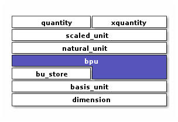

BPU
A rational (usually integral) power of a single basis unit
Context
Introduction
#include <xo/unit/bpu.hpp>
A xo::qty::bpu (aka “basis power unit”) represents a rational (usually integer) power of a Basis Unit.
For example:
{kind=link}
representation for cubic millimeters
{kind=link}
representation for annual (365-day) volatility
bpu is intended as an implementation-level abstraction.
Application code will normally interact with the more-general scaled_unit
instead of bpu.
Class
-
template<typename Int>
class bpu represent product of a compile-time scale-factor with a rational power of a native unit
Member Variables
Warning
doxygengroup: Cannot find group “bpu-instance-vars” in doxygen xml output for project “xodoxxml” from directory: /home/roland/proj/xo/xo-unit/.build-ccov/docs/dox/xml
Constructors
Warning
doxygengroup: Cannot find group “bpu-ctors” in doxygen xml output for project “xodoxxml” from directory: /home/roland/proj/xo/xo-unit/.build-ccov/docs/dox/xml
Access Methods
Warning
doxygengroup: Cannot find group “bpu-access-methods” in doxygen xml output for project “xodoxxml” from directory: /home/roland/proj/xo/xo-unit/.build-ccov/docs/dox/xml
Other Methods
Warning
doxygengroup: Cannot find group “bpu-methods” in doxygen xml output for project “xodoxxml” from directory: /home/roland/proj/xo/xo-unit/.build-ccov/docs/dox/xml
Comparison
Warning
doxygengroup: Cannot find group “bpu-comparison” in doxygen xml output for project “xodoxxml” from directory: /home/roland/proj/xo/xo-unit/.build-ccov/docs/dox/xml
Details
Warning
doxygengroup: Cannot find group “bpu-abbrev-helpers” in doxygen xml output for project “xodoxxml” from directory: /home/roland/proj/xo/xo-unit/.build-ccov/docs/dox/xml